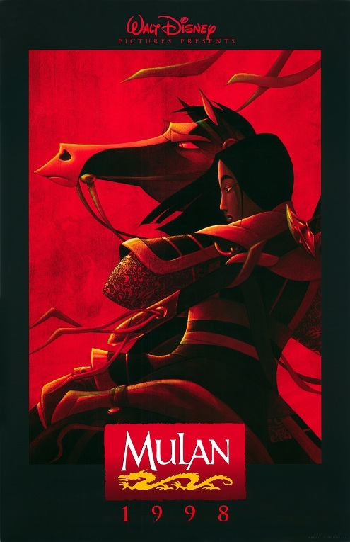

Mulan is a 1998 American animated musical coming-of-age[3] action-adventure film based on the Chinese legend of Hua Mulan, and produced by Walt Disney Feature Animation. The film was directed by Barry Cook and Tony Bancroft and produced by Pam Coats, from a screenplay by Rita Hsiao, Chris Sanders, Philip LaZebnik, and the writing team of Raymond Singer and Eugenia Bostwick-Singer, and a story by Robert D. San Souci. Ming-Na Wen, Eddie Murphy, Miguel Ferrer, and BD Wong star in the English version as Mulan, Mushu, Shan Yu, and Captain Li Shang, respectively, while Jackie Chan provided the voice of Li Shang for the Chinese dubs of the film. The film's plot takes place in China during an unspecified Imperial dynasty, where Fa Mulan, daughter of aged warrior Fa Zhou, impersonates a man to take her father's place during a general conscription to counter a Hun invasion.
Scorces: Mulan Wikipedia